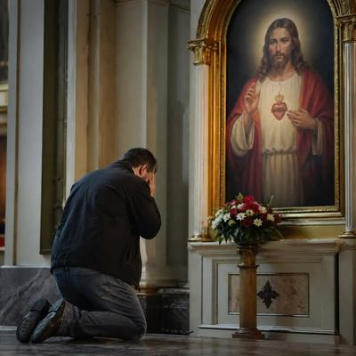

El daño que ha causado a la humanidad es sin duda enorme. La palabra «pecado», del latín peccātum, suele definirse como una «transgresión consciente de la voluntad de Dios». Sí, según el cristianismo implica algo más que un error: es una ofensa personal al Creador del universo, quien ha establecido normas específicas a su especie biológica preferida, y espera obediencia absoluta. Sin embargo, cuando uno examina este concepto desde la filosofía, la antropología, la sociología y la psicología, el panorama cambia de forma radical.


Los enfoques histórico y antropológico coinciden en que lo que hoy llamamos «pecado» no nació como una ofensa personal a un supuesto ser divino, sino como la ruptura de un orden, que podía ser cósmico, natural o social. En sociedades tradicionales, las normas no eran tanto «mandatos de un Dios que podía ofenderse», sino reglas para preservar la armonía del grupo y su relación con el entorno.
Sin embargo, lo que originalmente era un «fallo» o «desacierto» (como el griego hamartia, «errar el blanco», o el hebreo jattáʼth, «no alcanzar el objetivo»), fue transformado en una falta moral cargada de culpa metafísica. Y pasó así, de ser un error humano corregible, a una infracción que supuestamente hiere a un ente trascendente. Surge entonces el concepto de «pecado».
Pero hay aquí un punto clave: si no aceptamos la existencia de un «Dios» con voluntad normativa y que puede ser ofendido, la categoría ontológica de «pecado» simplemente desaparece. En otras palabras, para un no creyente los actos negativos no son «pecados»; son errores de juicio, faltas éticas, o incluso delitos (cuando infringen normas legales). Y la diferencia es profunda. Porque el «pecado» requiere una dimensión trascendente, e implica haber fallado ante una imaginaria instancia sobrenatural. Pero sin esa instancia, la responsabilidad es completamente humana, social y verificable. Y tampoco hay ninguna «mancha espiritual», ni necesidad de perdón divino: lo que hay son consecuencias reales, reparación posible y aprendizaje.
Pero, ¿cómo comenzó este desatino conceptual tan nefasto? —El concepto de «pecado» no tiene un origen único ni aparece de la nada, es el resultado de una evolución cultural compleja. En el antiguo Egipto, textos como el Libro de los Muertos incluyen la «Confesión Negativa» («No he robado», «No he mentido»), donde el individuo responde ante el principio de orden cósmico, Maat. Pero no se trata todavía de ofender a un «Dios», sino de mantener el equilibrio universal.
La antigua Persia por su parte, introdujo el zoroastrismo, con un fuerte dualismo ético: el bien contra el mal, la verdad contra la mentira; donde las acciones humanas participan en una batalla cósmica. Y este marco influyó directamente en el judaísmo postexílico y, posteriormente, en el cristianismo. Pero mucho antes, en Sumeria, ya existían ideas de faltas que provocaban el enojo de los dioses, y traían desgracias físicas, aunque todavía no condenas morales eternas.
Mientras que en la Grecia antigua, hamartia no era «pecado» en un sentido moral religioso, sino un error grave: fallar el objetivo. Similarmente en el judaísmo antiguo, jattáʼth tenía el sentido de desviarse del camino correcto, más práctico que metafísico.
El salto cualitativo ocurre con el cristianismo, que radicaliza el concepto: no sólo se peca con actos, sino con pensamientos y deseos. Introduce además la idea de una «naturaleza pecaminosa» heredada, lo cual contradice textos más antiguos, como Ezequiel 18:20, donde cada individuo es responsable sólo de sus propios actos.
Sin embargo, la humanidad no necesita el concepto de «pecado» para organizar su vida moral. Existen y han existido sobre la Tierra cientos de millones de personas que jamás consideraron la idea de poder «ofender a una divinidad» o de «transgredir la voluntad del creador o creadora del universo». Para empezar, tuvieron que transcurrir cientos de miles de años para que el homo sapiens comenzara a dar forma al concepto de pecado, sin que eso significara que miles de generaciones no tuvieron principios morales. Los pueblos primitivos (o sociedades cazadoras-recolectoras y de pequeña escala) tenían normas morales estrictas, aunque éstas diferían significativamente de las concepciones modernas occidentales. Pero la moral en estas sociedades no solía basarse en códigos escritos ni en religiones teístas con conceptos de «pecado», sino en la costumbre, la supervivencia colectiva y la reciprocidad.
Incluso en muchos pueblos indígenas amazónicos, lo que existe actualmente es el tabú o la ruptura del equilibrio con la naturaleza. Y las consecuencias para ellos son prácticas: enfermedad, mala caza, desequilibrio ecológico. No existe la «culpa ante Dios». Mientras que entre los inuit, el énfasis está en las costumbres (maligait). El incumplimiento genera vergüenza social o temor a fuerzas naturales, pero no culpa moral ante un supuesto juez divino.
Y tenemos el budismo, con unos 500 millones de miembros, para quienes tampoco existe el concepto de «pecado». Se habla entre ellos de akusala (acciones torpes o inhábiles) que generan sufrimiento (karma), pero no se ofende a ningún «Dios», sino que uno mismo se ata a las consecuencias de su ignorancia.
Todo esto confirma que la moralidad humana puede existir perfectamente sin la enfermiza noción de pecado. Sí, enfermiza. Muy enfermiza, porque desde la psicología clínica, el concepto de pecado suele estar vinculado a la culpa neurótica: un sentimiento persistente de indignidad personal, acompañado de miedo al castigo. No se trata de una culpa funcional (la que nos ayuda a corregir errores), sino de una culpa crónica que deteriora la autoestima. Y especialmente en contextos religiosos estrictos, esta culpa puede ser desproporcionada (por pensamientos o deseos), internalizada desde la infancia, y difícil de resolver sin recurrir a la misma institución que la genera.
En contraste, la ética secular promueve algo mucho más saludable: reconocer el daño real, asumir responsabilidad, reparar cuando sea posible, y aprender del error para no repetirlo. Así, sin «manchas espirituales» ni ficticias condenas eternas. La mayoría de enfoques psicológicos modernos coinciden en que un sistema basado en empatía, responsabilidad y reparación, es mucho más robusto que uno basado en miedo, culpa y sentimiento de inferioridad.
Pero hay algo más que vuelve todavía más abominable el concepto de «pecado». En la práctica religiosa no es sólo es un concepto moral, sino más bien una herramienta de control. Y funciona mediante una estructura muy eficaz: define una «enfermedad espiritual» universal: todos somos pecadores, incluso por pensar; en consecuencia, genera culpa y miedo, indignidad personal, y amenaza con un castigo eterno. Para luego ofrecer una única solución que sólo puede proporcionar la propia institución religiosa. El paralelismo resulta obvio: crear una dolencia invisible e inexistente, para vender el remedio exclusivo, también imaginario.
Pero para estas religiones, el concepto de «pecado» es indispensable, al grado de que sin él perderían su razón de ser, porque desaparecería la necesidad de redención sobrenatural.
La conclusión es clara: el concepto de «pecado» no es una verdad universal ni necesaria. Es una construcción cultural que ha evolucionado, cargándose progresivamente de culpa, miedo y control. Y la alternativa no es el caos moral, como los creyentes suelen pensar, sino algo más maduro: una ética sin superstición, una responsabilidad sin culpa paralizante, y una humanidad sin miedo a ninguna condenación inexistente.
En lugar de vernos como seres defectuosos que necesitamos redención sobrenatural, podemos entendernos como lo que somos: primates altamente sociales, capaces de errar, pero también de aprender, reparar y mejorar. Y eso, aunque menos dramático que el «pecado», es infinitamente más honesto.
[Godless Freeman]
Comentarios
Comments powered by Disqus